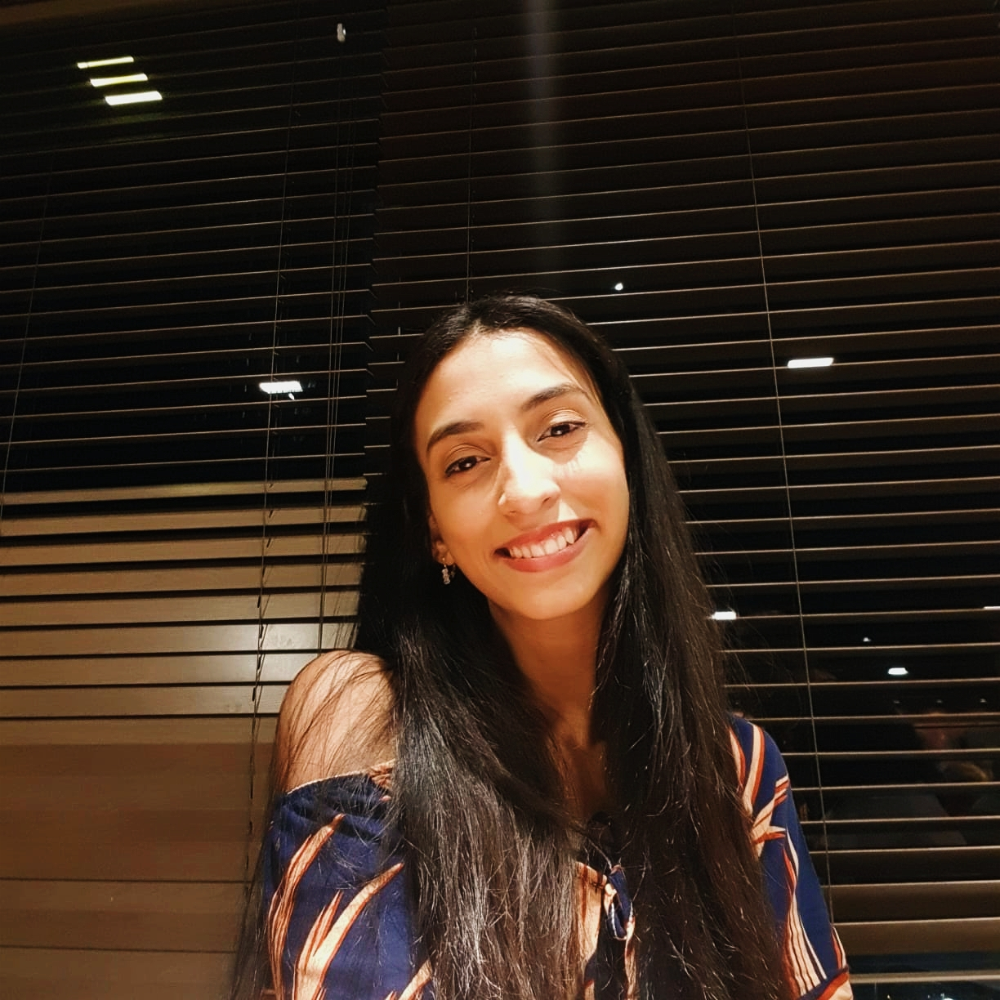

Sobre mim
Hey!Sou Beatriz, tenho 24 anos e como todo bom jovem que cresceu no anos 2000
tô aprendendo a encontrar equilíbrio entre a vida na internet e fora a vida fora dela.
Sempre curti ler blogs, creio que é um espaço de expressão mais profunda sobre quem somos.
Escritos
Videos
Podcast